OptimumData movement sets the ceiling. Optimum raises it.
Universal Data Acceleration Network: dùng RLNC để tăng tốc lan truyền dữ liệu trên blockchain.
Kéo mép trang, bấm ‹ › hoặc cuộn chuột để lật · mô hình 3D sẽ bật lên khi trang dừngMục lục
Mạng Optimum
Optimum là gì?
- Mạng tăng tốc dữ liệu giúp blockchain nhanh và hiệu quả hơn: gossip độ trễ thấp giữa các node ở nhiều khu vực.
- Lõi RLNC (Random Linear Network Coding) do GS. Muriel Médard (MIT) dẫn dắt; tối ưu có thể chứng minh về thông lượng và độ trễ khi có mất gói.
- Truyền ít hơn mà chuyển được nhiều hơn.
Không đổi luật chơi của chain
- Không đổi consensus. Chỉ cải thiện cách dữ liệu lan truyền.
- Chain-agnostic. Tích hợp mọi blockchain, không viết lại giao thức.
- Bổ trợ scaling. Chạy cạnh execution, không cần chạy đua phần cứng.
Cùng một block, gửi đi gửi lại
Gossipsub / libp2p: mỗi node chuyển tiếp cho nhiều hàng xóm nên nhận trùng lặp, tốn băng thông và thêm độ trễ. Optimum không phải blockchain: chạy cạnh chain, không có consensus riêng, không xử lý giao dịch.
Gói trùng lặp
RLNC: gửi phương trình, không gửi mảnh
Mỗi packet là tổ hợp ngẫu nhiên của các mảnh. Nhận đủ 4 packet độc lập từ bất kỳ nguồn nào là tái tạo được dữ liệu; mất gói chỉ cần nhận thêm gói khác.
Thử tự tay
Mã hoá, recode, giải mã
- Mã hoá. Chia thành
kmảnh, tạonshard bằng tổ hợp tuyến tính ngẫu nhiên. - Recode. Node tạo ngay shard mới từ tập đang có, không chờ đủ dữ liệu.
- Giải mã. Chỉ cần
kshard độc lập tuyến tính (nghịch đảo ma trận).
Kết quả: độ trễ thấp, chịu mất gói, tiết kiệm băng thông.
mump2p hoạt động thế nào
mump2p (Galois Gossip) xây trên GossipSub của libp2p. Mỗi node là một libp2p host kèm logic RLNC: libp2p lo discovery, kết nối và vận chuyển; mesh giữ peer như GossipSub; RLNC lo mã hoá, recode, giải mã.
Số shard khi publish: ShredFactor × PublisherShardMultiplier.
Chạy song song, không thay consensus
Cuộc đua độ trễ
Control message và mesh
IDONTWANTđừng gửi thêm shardIHAVEtôi đang giữ shardIWANTxin thêm shardGRAFT / PRUNEthêm / bớt peerMặc định libp2p lý tưởng 6 peer, chấp nhận khoảng 4–12; mump2p kế thừa cách quản lý mesh này.
Tham số mã hoá RLNC
- ShredFactor: số mảnh gốc; lớn hơn = mịn hơn nhưng tốn tính toán.
- PublisherShardMultiplier: quyết định số shard tạo lúc publish.
- ForwardShardThreshold: chỉ recode và chuyển tiếp khi vượt
ShredFactor × Threshold.
Bảo mật: thừa hưởng từ libp2p
- Kênh xác thực & mã hoá. Noise hoặc TLS, chống nghe lén và can thiệp.
- Chống Sybil và Eclipse. Discovery và quản lý peer của libp2p, giảm rủi ro bị node độc hại chiếm quyền hay cô lập.
Trang bên: biện pháp riêng cho network coding.
Chống pollution attack
- Dữ liệu gốc được băm thành một định danh duy nhất, gắn chữ ký publisher.
- Sau khi giải mã, node kiểm tra với chữ ký và hash gốc.
- Thất bại ⇒ có shard nhiễm; peer gửi shard sai bị hạ uy tín và dần cô lập.
Dù có recode, tính toàn vẹn vẫn kiểm chứng được từ đầu đến cuối.
Optimum Gateway
- Sidecar đọc dữ liệu block từ client, mạng mã hoá RLNC rồi gửi packet đi; kết nối qua một lệnh gọi API.
- Không thay consensus client, không đổi cách ký, không cần phần cứng mới.
Builder và operator có thể dùng mump2p ngay qua Gateway.
Flexnode
Node do operator tự chạy, tham gia coded gossip và phục vụ memory request; ai cũng chạy được, song song với client và P2P stack hiện có.
- Mã hoá, giải mã, chuyển tiếp frame RLNC.
- Bộ đệm giới hạn để khôi phục mất gói, làm mượt tail latency.
Flexnodes và Latency Marketplace nằm trong roadmap.
Độ trễ thấp có giá trị kinh tế
Dòng giá trị
Bên cần tốc độ trả phí cho node cung cấp băng thông / equations (roadmap).
Ai được lợi, dùng ở đâu
- Ethereum: mempool lan nhanh, tỷ lệ uncle thấp.
- Solana: bổ sung cho Turbine bằng khả năng khôi phục mất gói.
- Cosmos/IBC: định tuyến liên chuỗi độ trễ thấp.
Người dùng: nhóm L1/L2, validator, node operator, builder, dev dApp và người dùng cuối.
Con số và phản hồi
Nhóm vận hành ban đầu: Everstake, P2P.org, Blockdaemon, Infstones, Luganodes, Ebunker… Benchmark mainnet vẫn đang chạy. Phản hồi từ Luganodes, P2P.org, Kiln.
Hỏi nhanh (1)
- Cho ai? Validator, node operator và các chain muốn nâng trần hiệu năng mà không chạy đua phần cứng.
- Validator được gì? Block đến nhanh và đều hơn: ít miss, reward dễ dự đoán.
- Có testnet? Có, mump2p chạy trên Hoodi; xem getoptimum.xyz.
Hỏi nhanh (2)
- Nếu mump2p gián đoạn? Gossipsub luôn chạy song song; attest và propose không bị ảnh hưởng.
- Đụng consensus hay khoá? Không: không truy cập khoá, không chọn leader, không ký.
- Đổi hạ tầng? Không phần cứng mới, không sửa consensus, tích hợp qua API.
Đội ngũ
- GS. Muriel Médard, CEO: NEC Chair tại MIT EECS, đồng phát minh RLNC, thành viên NAE (2020) và NAI (2018).
- Kent Lin: kinh doanh, tokenomics, gọi vốn; từng là Partner tại GSRV.
- TS. Kishori Konwar: hệ phân tán, lý thuyết mã hoá, AI; từng ở Meta.
Seed 11 triệu USD, tháng 4/2025 (theo CoinDesk).
Roadmap
Tài liệu
- Introduction · mump2p Protocol
- Optimum Gateway · Quick start (HOP)
- Nghiên cứu: Gossip, Transport, Decentralized Access
- Optimum ADRs trên GitHub
Trang giải thích phi chính thức. Số liệu theo Optimum công bố; hình 3D chỉ minh hoạ khái niệm, không chính xác về tỷ lệ. Nguồn: getoptimum.xyz, docs.getoptimum.xyz.
Bắt đầu từ đâu
- Đọc Introduction và mump2p Protocol.
- Chạy Optimum Gateway theo docs.
- Thử Quick start (HOP).
- Validator Ethereum: đăng ký waitlist.
Cộng đồng: X @get_optimum, Discord, Telegram · getoptimum.xyz
Data movement sets the ceiling.